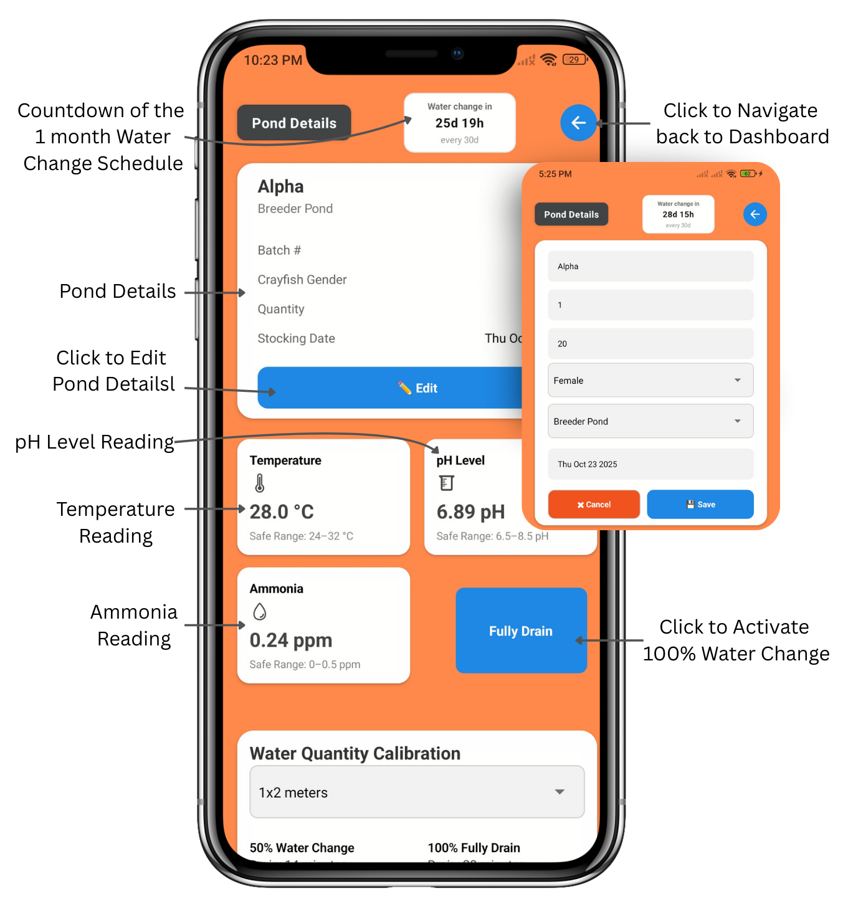
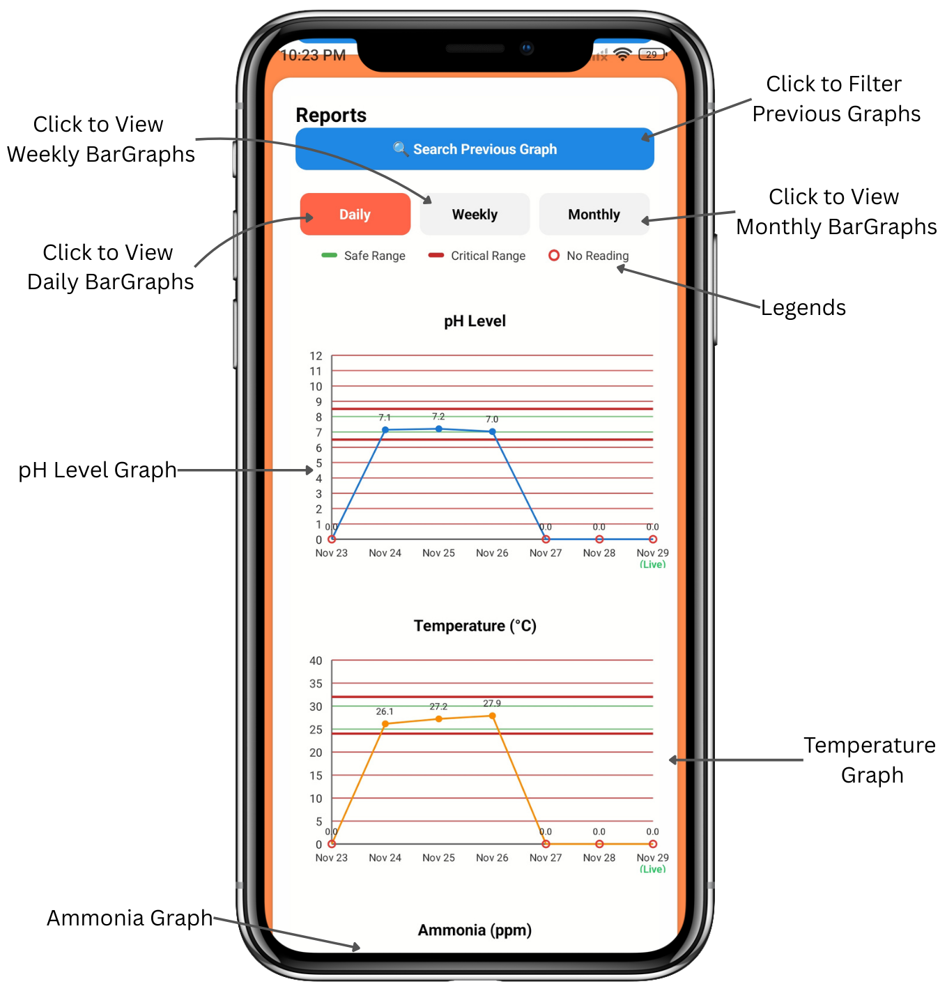
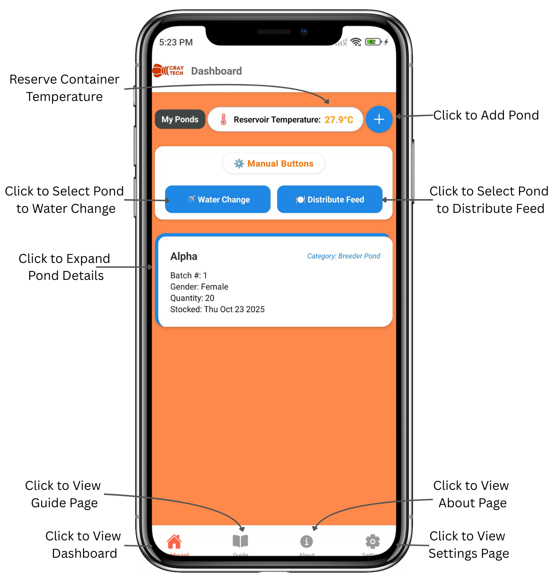
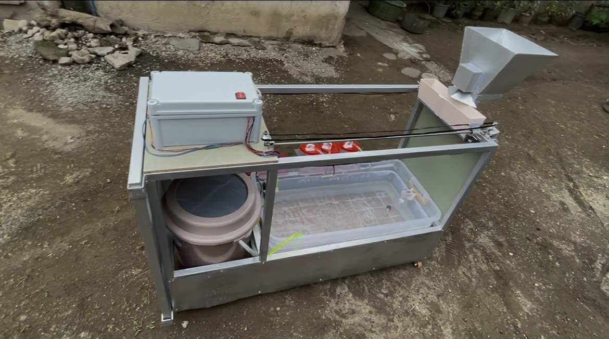

Featured Case Study
CrayTech Monitoring System
Android-based IoT monitoring system for crayfish farming, designed to help monitor water quality and support better farm decisions.

Overview
Keeping water conditions easier to understand.
CrayTech is an Android-based IoT monitoring system designed to monitor water quality conditions for crayfish farming. The system provides real-time data updates and alerts to help farmers maintain optimal conditions.
Problem
Crayfish farming needs consistent monitoring because sudden water quality changes can affect production and animal health.
Solution
The app connects sensor readings with a mobile interface so users can review current conditions and respond faster.
Outcome
The project presents a practical monitoring workflow with screens, alerts, and cloud-connected data handling.
Technology
Built with practical tools.
Screenshots
Interface previews



